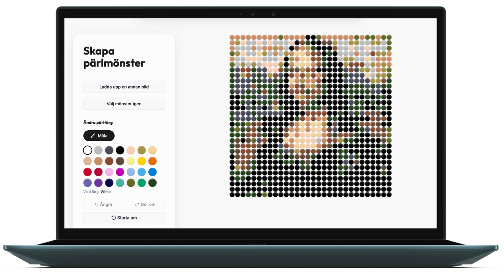
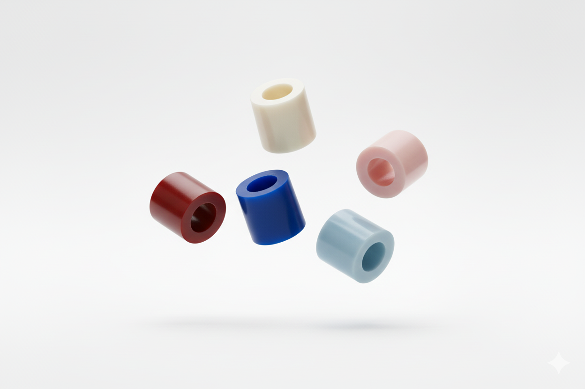
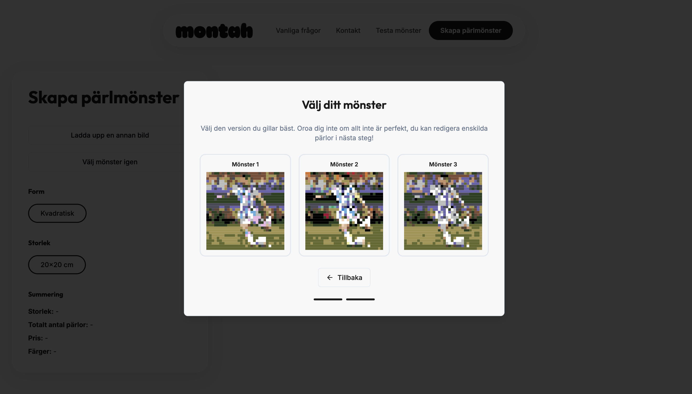
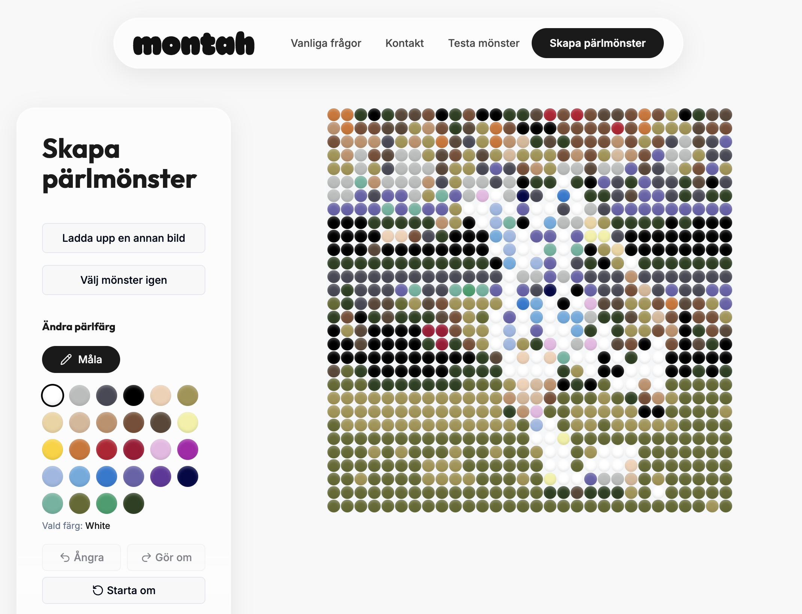

Montah
What happens when a designer with no coding background decides to build a product using only AI tools? This is that story.

Project overview
Challenge
As a designer without a development background, bringing a product idea to life independently has traditionally required coding skills. With Montah, I wanted to challenge that assumption, exploring how far AI tools could take a non-developer from idea to a fully functioning product, without sacrificing creative control.
My objectives
- Explore and evaluate AI-powered tools for end-to-end product development
- Maintain design quality and control throughout the building process
- Build a functional bead pattern generator that produces usable outputs
The Idea
Montah started as an experiment, I wanted to explore what AI could actually build, and bead patterns turned out to be a perfect use case. A clear input, a visual output, and a tangible end product. Montah is a web-based tool that transforms any image into a bead pattern. Upload a photo, generate a pattern, adjust the colours manually if needed. The idea, if I take it all the way, is that users should be able to buy a kit with the pattern and all the beads needed to recreate their image.
The Journey
-
Starting with Lovable
Lovable made it easy to get started quickly, but it came with a catch. The tool suggested its own design direction, making it difficult to achieve a result that felt personal and truly mine. I had a product, but not one I felt in control of.
-
Moving to Figma
Stepping back into Figma gave me back that control. Using Figma Design and Figma Make, I could shape the product exactly as I envisioned it, the typography, the layout, the feel. This was where Montah started to look like itself.
-
Trying Figma Sites
Publishing directly from Figma felt like the natural next step. But in practice, swapping images was cumbersome, animations didn't behave as expected, and adding more complex components hit a wall. Another dead end, but a useful one.
-
Back to Lovable
The breakthrough came from combining both worlds. By importing my Figma designs as images into a fresh Lovable project, I finally had both speed and creative control. The full circle moment.
Assets
From the beginning, I had a vision of a "bead rain" hero experience, beads floating and falling through space as you enter the site. A parallax scroll felt like the cleanest and most elegant way to bring that to life. The question was whether it was actually achievable. I wasn't sure if AI could generate realistic-looking beads, but I'd heard good things about Nano Banana and decided to try it.
It took some trial and error to get it right but I was seriously impressed by the results from Nano banana! The beads were generated in various angles, orientations and in colours I sent in as hex code. I used the generated image and brought them into Affinity where each one was isolated and manually rearranged to build three distinct layers for the parallax effect:
- Foreground — large beads, slightly blurred, creating depth
- Midground — the focal layer, sharp and in full focus
- Background — smaller beads, more blurred, receding into the distance
The result is a hero experience that feels alive and dimensional, built entirely through AI generation without a single 3D modeling tool.

The Pattern Generator
The original bead pattern script produced results that didn't feel accurate enough, the colour mapping was off and the patterns lost too much detail from the original image.
Rather than accepting the limitation, I worked with Claude Code to improve the algorithm. The solution: instead of relying on a single script, three different pattern generation scripts now run simultaneously, each using a slightly different approach to colour mapping and detail rendering. The user is then presented with all three results and picks the one that looks best.

Through the process I realised that no matter how much I refined the scripts, creating an algorithm that works well for every type of image is genuinely hard, especially within a 30x30 bead grid that leaves little room for detail. So rather than chasing perfection in the code, I added a manual editing step where users can repaint individual beads to fine-tune the pattern until they're happy with the result.

The Result
Montah is still a work in progress, the core generator works, but I'm continuing to refine the details and exploring how to package it as a real product.
Upload any image, choose between three generated bead patterns, and fine-tune the colours manually. Once happy with the result, users get a full breakdown of exactly how many beads they need per colour. The vision going forward is to let users order a ready-packed kit with everything included, the pattern and all the beads needed, delivered to their door. The process of building it taught me as much as the product itself, and the vision is still evolving.
Final thoughts
What surprised me most was how smooth the creation process actually is, the barrier to building has never been lower. But that ease comes with a catch: when anyone can build, the results risk becoming generic. More than ever, having a strong personal style and distinct branding is what separates something memorable from something forgettable.
The project also reminded me that a straight path isn't always the best one. The wrong turns, the dead ends, the full circle moment, that's where the real learning happened.